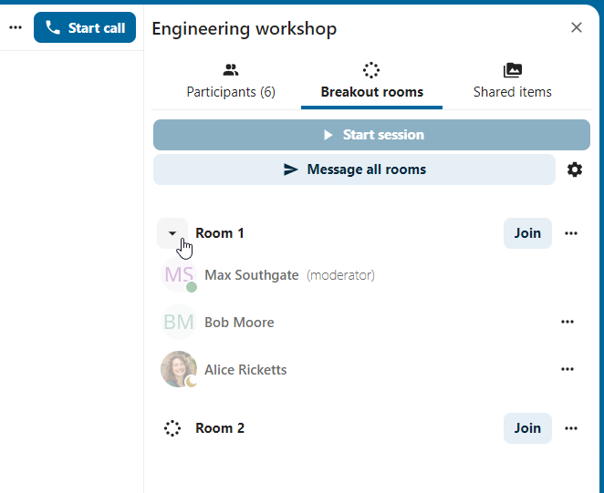
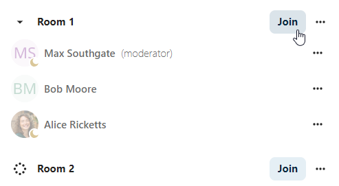

Breakout rooms
Breakout rooms allow you to divide a Nextcloud Talk call into smaller groups for more focused discussions. The moderator of the call can create multiple breakout rooms and assign participants to each room.
Poznámka
Breakout rooms are currently not available in conversations that are joinable by guests (public conversations).
Configure breakout rooms
To create breakout rooms, you need to be a moderator in a group conversation. Click on the top-bar menu and click on Setup breakout rooms.

A dialog will open where you can specify the number of rooms you want to create and the participants assignment method. You have three options:
Automatically assign participants: Talk will automatically assign participants to the rooms.
Manually assign participants: You’ll go through a participants editor where you can assign participants to rooms.
Allow participants choose: Participants will be able to join breakout rooms themselves.

Manage breakout rooms
Once the breakout rooms are created, you will be able to see them in the sidebar.
{kind=link}

From the sidebar header, you can:
Start and stop the breakout rooms: this will move all the users in the parent conversation to their respective breakout rooms.
Broadcast a message to all the rooms: this will send a message to all the rooms at the same time.
Make changes to the assigned participants: this will open the participants editor where you can change which participants are assigned to which breakout room. From this dialog it’s also possible to delete the breakout rooms.

From the breakout room element in the sidebar, you can also join a particular breakout room or send a message to a specific room.
{kind=link}
